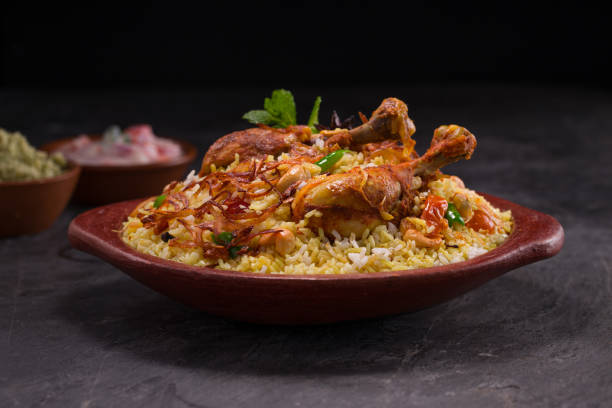

Biriyani

Description
Biryani is a mixed rice dish most popular in South Asia and was thought to have originated from ancient Iran.
It is made with rice, some type of meat (chicken, beef, goat, lamb, prawn, or fish) and spices.
To cater to vegetarians, in some cases, it is prepared by substituting vegetables for the meat.
Ingredients
- 4 cups basmati rice
- 3 tablespoons Ginger & garlic paste
- 5 green chilies (or less, depending on taste)
- 1 onion finely chopped
- 2 tomato finely chopped
- 2 teaspoons ea. cinnamon, cloves, cardamom
- Cashew nuts
- 4 tablespoons oil or ghee
- 2 teaspoons Garam Masala powder
- 3 teaspoons chili powder (or less, depending on taste)
- Mint leaves & coriander leaves (handful)
- Juice of ½ lemon
Steps
- WWash and soak 2 cups basmati rice in cold water for 30 minutes.
- Heat up a pot of boiling water, then add your aromatics (star anise, cardamom, bay leaves, cinnamon, cloves) and salt
- Once the water is boiling, strain your soaked rice and drop it into the pot of boiling water.
- Keep the pot on high heat for 3-4 minutes MAX. The rice should be about 75% cooked.